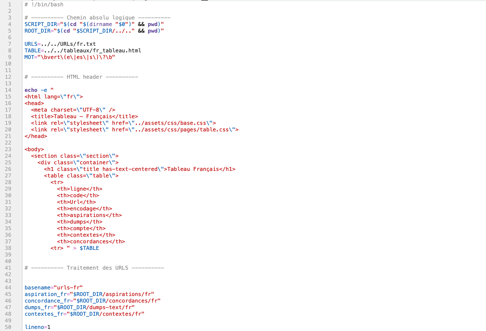
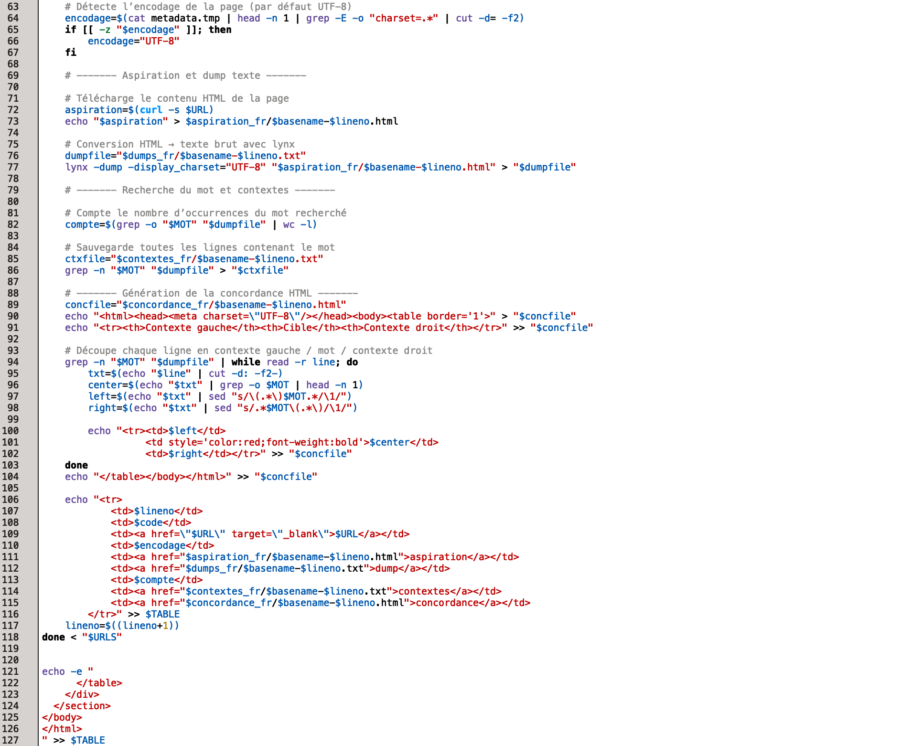
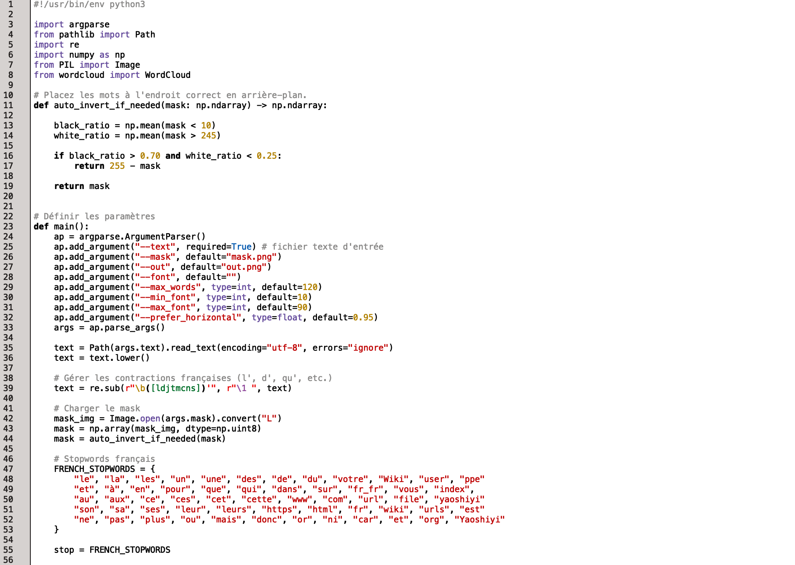

Explication : Contrairement à d’autres couleurs, qui changent de nom quand elles sont lavées de blanc ou rabattues avec du noir, le vert conserve son nom.


Explication : Cette étape montre le traitement automatique des URLs et la génération des tableaux HTML à partir des données collectées.